Biên kịch và sản xuất short drama bằng AI. Tôi làm trọn một tập phim: từ ý tưởng, kịch bản, thiết kế nhân vật, tạo hình và video bằng AI, đến dựng, âm thanh và phụ đề.
sản xuất video và phim ngắn có dùng AI, từ 2024 đến nay.
trên 2 nền tảng, thoại tiếng Trung, phụ đề tiếng Việt.
kênh YouTube cá nhân, cộng tác nội dung phim cho 98S Media.
Năm 2026, Lục Minh Xuyên trắng tay, không đủ tiền chữa bệnh cho mẹ. Anh hỏi trợ lý AI nên làm lại từ ngày nào, rồi tỉnh dậy ở ngày 29/10/2021. Tập 1 đi từ cú sốc trọng sinh đến cơ hội kinh doanh đầu tiên và đối thủ đầu tiên.
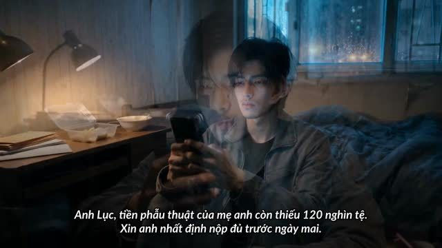
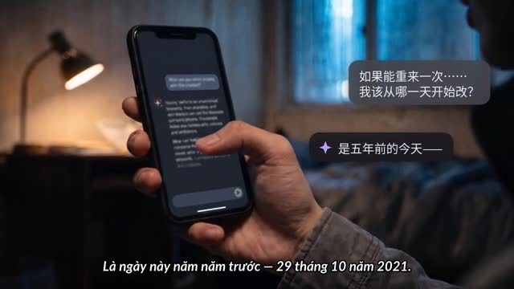
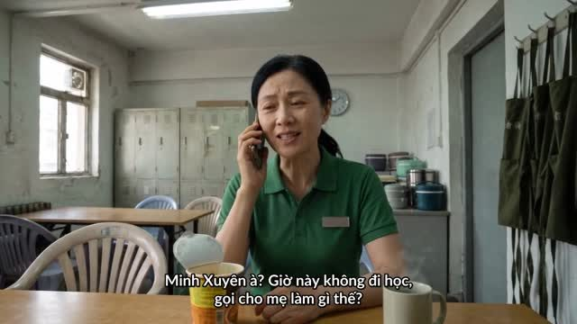
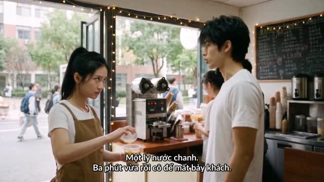
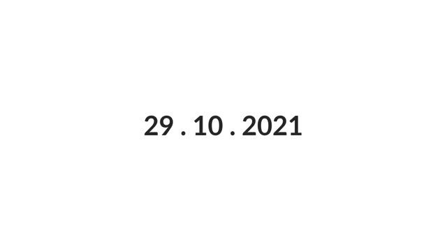
Chia tập thành các đoạn 8–12 giây, ghi rõ hành động và thoại.
Khuôn mặt, trang phục, bối cảnh, khung mở đầu cho từng đoạn.
Video có giọng nói, dựa trên ảnh tham chiếu và mô tả.
Soát mặt, tay, đồ vật, thoại. Lỗi nặng thì làm lại.
Ghép, chuyển cảnh, mốc thời gian, âm thanh, phụ đề.
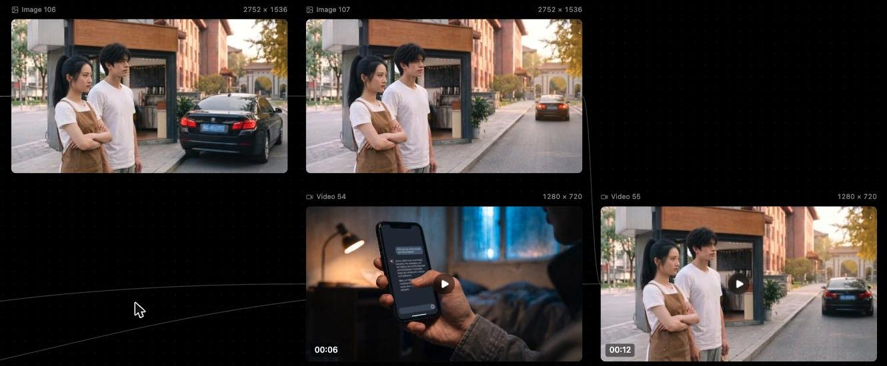
Short drama dọc, tình cảm kỳ ảo, thoại tiếng Trung. Mục tiêu là làm đẹp hơn bản của đối thủ cho cùng cảnh. Cảnh dài hơn 3 phút được dựng lại qua 3 vòng, mỗi vòng đổi cách giữ nhân vật cho tới khi khuôn mặt, trang phục và đạo cụ ổn định suốt 19 clip.
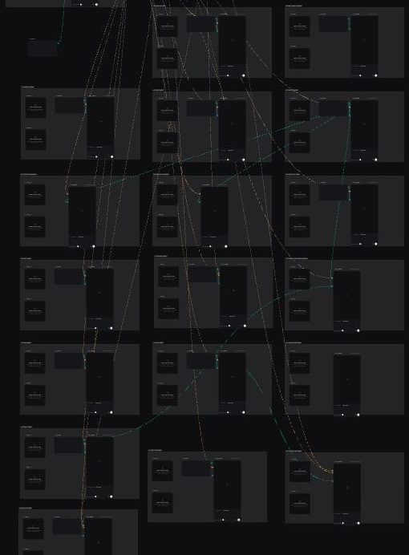
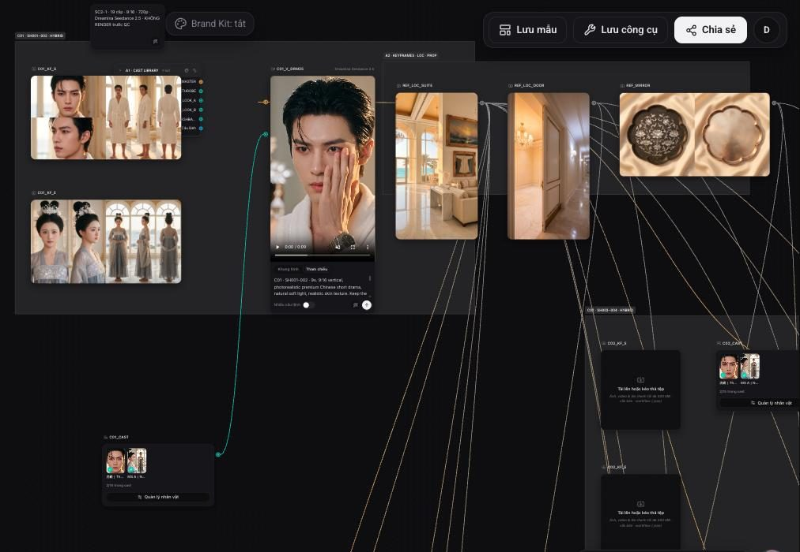
Series short drama 30 tập, mỗi tập 1–2 phút. Thể loại quý tộc châu Âu trung cổ, báo thù, âm mưu, nữ cường. Tôi dựng video từ kịch bản có sẵn, bám bộ thiết kế nhân vật cho từng vai.
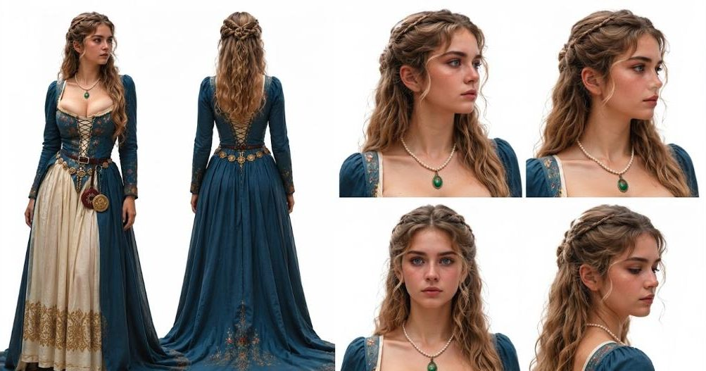
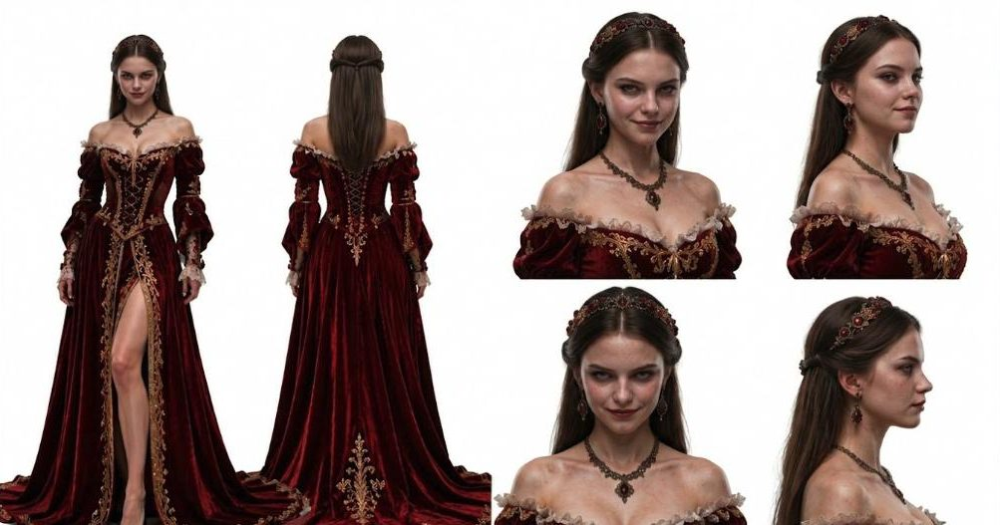
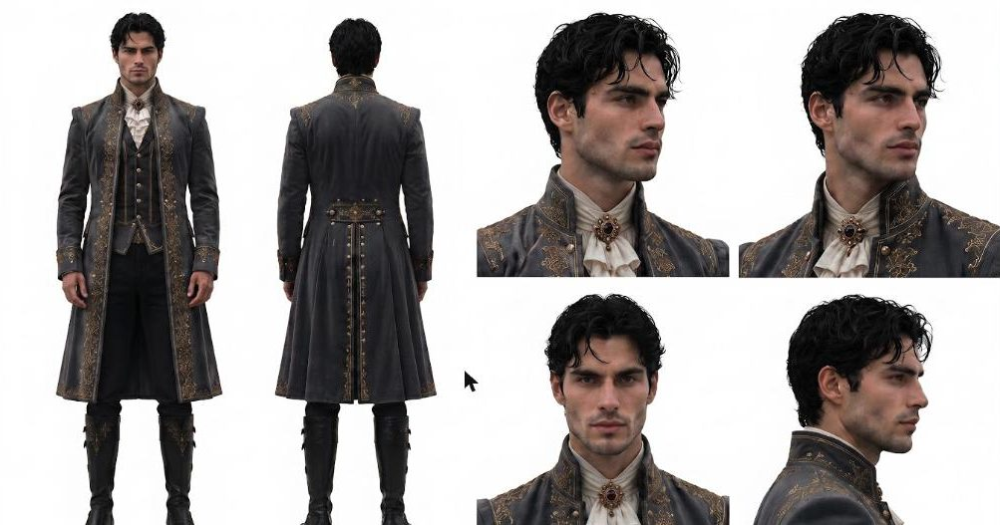
Logline. Minh Xuyên có ba ngày để cứu quán trà sữa của Tri Hạ. Ngay sáng đầu tiên, Hàn Khải Phong mở quán đối diện và bán mua 1 tặng 1. Thắng được ván này, anh mới biết đối thủ đã chuyển sang đánh vào gia đình mình.
Cận: một tờ rơi đỏ trượt qua khe cửa: “Trà sữa Phong Vị · Khai trương đối diện · Mua 1 tặng 1”. Tri Hạ nhặt lên, nhìn sang bên kia đường. Thợ đang treo biển hiệu mới.
Minh Xuyên mở ứng dụng AI. Bong bóng chat hiện cạnh điện thoại.
Minh Xuyên nhìn đồng hồ treo tường. Cận kim chỉ 9 giờ 30. Anh khẽ cười.
Hết giờ tự học tối, sinh viên ùa ra. Tử Hào phát phiếu: “Chờ quá 3 phút, ly thứ hai miễn phí”. Tin đặt trước nổ liên tục trong nhóm chat ký túc xá.
Máy dập nắp kẹt. Đồng hồ cát trên quầy chảy hết. Tri Hạ đẩy liền ba ly miễn phí ra cho khách.
Màn hình AI: “Doanh thu đêm hai: 1.120 tệ · Miễn phí: 340 tệ”. Tri Hạ nhìn con số, không nói gì, rồi lắc bình mạnh hơn.
Toàn cảnh: quán Phong Vị đông nhưng ra ly chậm. Hàng bên Lâm Ký chạy đều. Nhân viên bên kia đường nhìn sang. Tri Hạ đếm hóa đơn, ngước lên.
Cô đặt một phong bì lên quầy, đẩy về phía anh.
Tri Hạ suýt bật cười, vội quay đi.
Chiếc sedan đen dừng sát Minh Xuyên. Cửa kính hạ xuống: Hàn Khải Phong.
Hắn đưa ra một tấm danh thiếp: “Siêu thị Thịnh An · Tập đoàn Hàn thị”. Minh Xuyên khựng lại. Đó là siêu thị nơi mẹ anh làm việc.
Điện thoại rung. Em gái gọi.
Màn hình AI tự sáng: “Cảnh báo: sự kiện này sớm hơn dữ liệu cũ 3 tháng.” Cận mặt Minh Xuyên. Đèn hậu xe đen xa dần. Cắt đen.
Tờ rơi đối thủ xuất hiện ngay khung đầu. Người xem biết luôn có hạn chót, có đối thủ và có rủi ro.
Mất thời gian, rồi kế hoạch liều, rồi lỗ tiền, rồi thắng. Đúng lúc thắng, đối thủ đổi sang đánh vào điểm yếu nhất của nhân vật.
Tuyến kinh doanh và tuyến gia đình gặp nhau ở cuối tập. AI có cảnh báo nhưng không cứu được ai, đúng nguyên tắc của series.
Sản xuất: 3 bối cảnh, khoảng 12 shot, dùng lại toàn bộ nhân vật và bối cảnh của Tập 1.
Xem dự án Nguyệt Quang Bảo ở phía trên.
Phim pilot 2 phút 12 giây, 22 shot, thể loại thương chiến. Kịch bản sản xuất có thoại tiếng Trung kèm pinyin và bản dịch. Hai nhân vật chính và 22 thẻ shot dựng sẵn trên canvas.
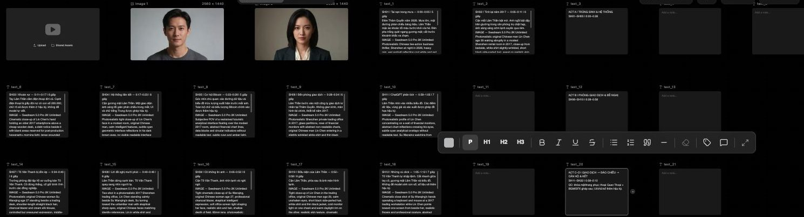
Tự làm từ tìm ý tưởng, viết kịch bản, dựng video đến đăng tải. Cộng tác nội dung về phim cho 98S Media (Thực Sự Xem Phim).